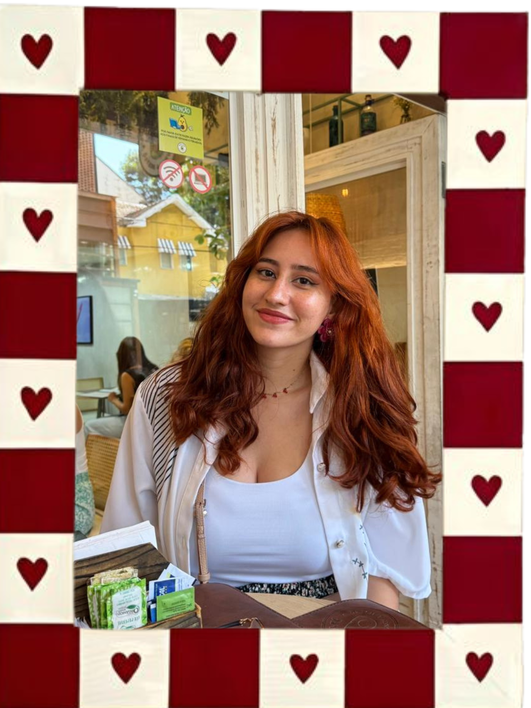
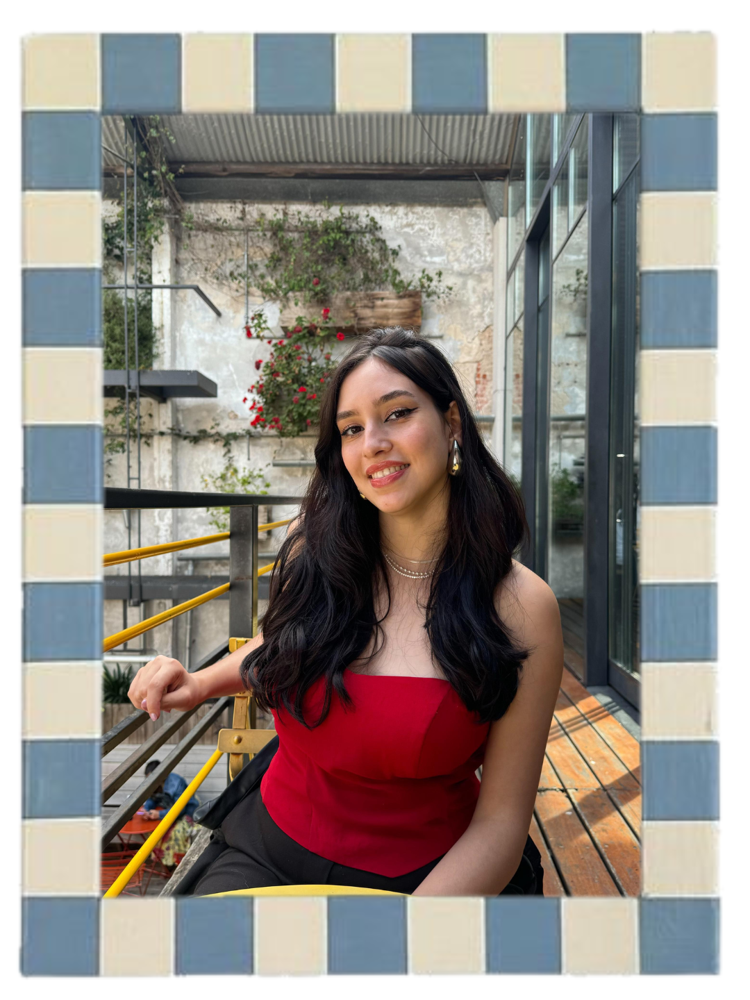

Quem somos
A Silly Cat Crochê representa a ideia de nos conectarmos com a diversão que tínhamos na infância por meio dos amigurumis. Um espaço para sermos bobos e criativos, porque ser adulto não precisa ser chato! O nome é inspirado na nossa silly cat (Lili) que alegra os nossos dias com o seu jeito boboca e espontâneo de ser.
Equipe

Anna
Cargo: Crocheteira
Hobbies: Amo viajar, fazer crochê, testar receitinhas culinárias, fazer colagens e girar muito no pole
Comida preferida: Pizza
Estilo musical: Pop e k-pop
Estilo de crochê: Amigurumis, decorações e roupas

Samara
Cargo: Crocheteira
Hobbies: Gosto de fazer colagens, decorações para casa, às vezes invento de pintar e faço pole
Comida preferida: Sushi
Estilo musical: Pop e k-pop
Estilo de crochê: Amigurumis e tapestry